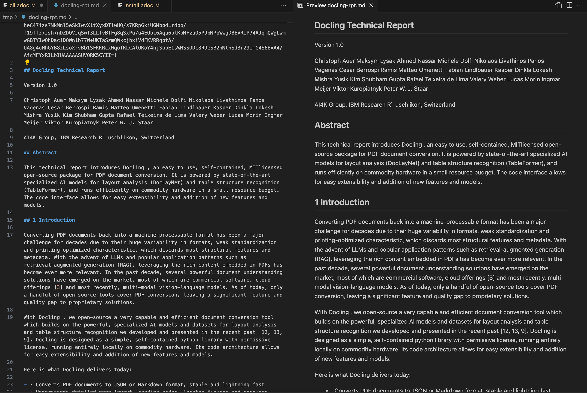
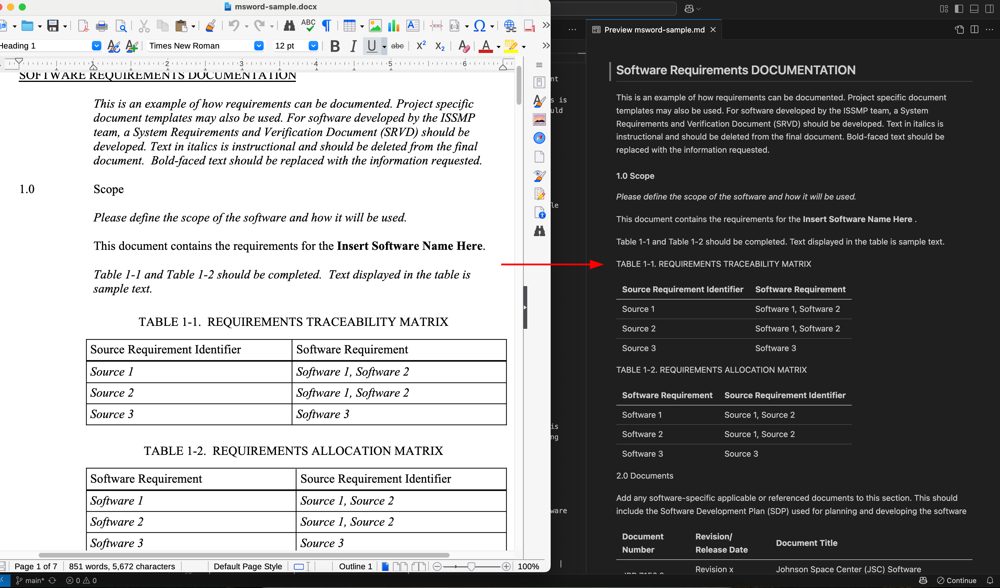
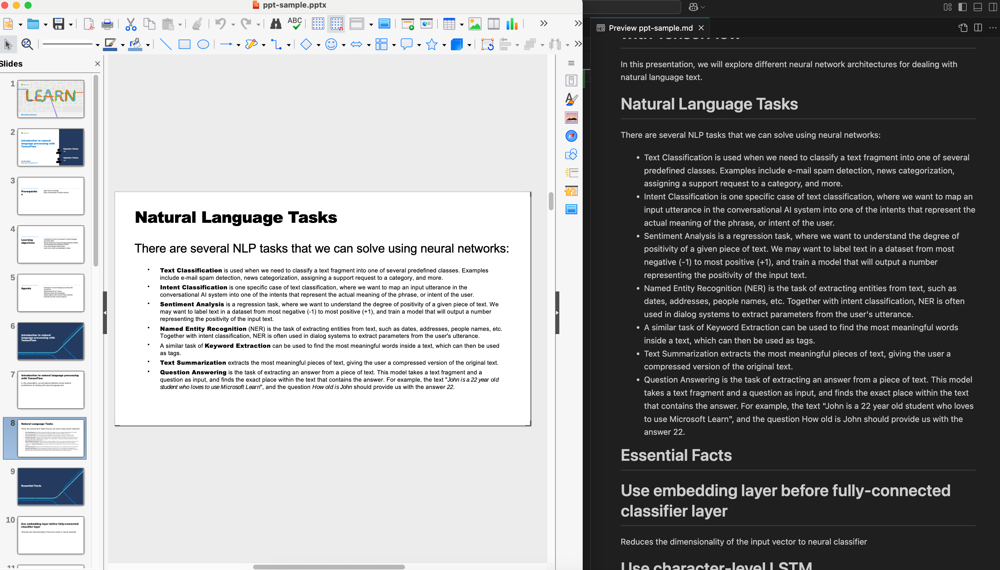

Using the Docling CLI
You can use the Docling CLI to convert documents from and to various supported formats. This is useful for prototyping and experimentation with different kinds of documents that you want to index and use in your RAG pipelines for your Gen AI applications.
The complete list of commands and the corresponding options supported are available at https://docling-project.github.io/docling/reference/cli
Pre-requisites
-
Docling CLI must be installed as outlined in the previous section using
pip -
Git CLI to clone the sample data files from GitHub
Lab: Using the Docling CLI
-
If you have not already done so, clone the Git repository containing the sample documents that should be converted, to a folder of your choice. If you have completed the previous lab, then there is need to do this step.
$ git clone https://github.com/RedHatQuickCourses/genai-apps.git -
All the sample input files and code is in a folder called
dataprep. Change to this folder in the terminal.$ cd genai-apps/dataprep -
If you have completed the previous lab and created a virtual environment and installed Docling, activate the venv.
$ source venv/bin/activateYour prompt should change to indicate that you are now running in an isolated virtual environment
-
Verify that Docling is installed in the venv
$ (venv) pip3 list | grep docling docling 2.36.1 docling-core 2.34.1 docling-ibm-models 3.4.4 docling-parse 4.0.3 -
Run the
doclingCLI command to convert a PDF. When you run thedoclingcommand for the first time, it will take a while to download and cache a few pre-trained models from Hugging Face model repository (These specialized models are used to identify and extract tables, images and layout information from documents). Subsequent runs will be approximately 50% faster.$ (venv) docling --output /tmp/ sample-data/docling-rpt.pdfThe default output format is Markdown. The output is saved to a .md file in the location specified by the
--outputflag. -
Verify that a file with the same name, but with a
.mdextension is created in the/tmpfolder. You can preview the Markdown file in Visual Studio Code or some other previewerFigure 1. PDF Converted to Markdown Preview -
You can output to a different format by passing the
--toflag with the output format required. For example, to get JSON output:$ (venv) docling --to json --output /tmp/ sample-data/docling-rpt.pdf -
Verify the JSON output in the
/tmpfolder{ "schema_name": "DoclingDocument", "version": "1.4.0", "name": "docling-rpt", "origin": { "mimetype": "application/pdf", "binary_hash": 11465328351749295394, "filename": "docling-rpt.pdf" ... "orig": "This technical report introduces Docling... }, ... -
Now, let’s try and convert an MS Word document to Markdown
$ (venv) docling --output /tmp/ sample-data/msword-sample.docxFigure 2. MS Word file to Markdown PreviewNotice how Docling has identified the layout and table structure in the input MS Word document and correctly converted it to Markdown.
-
Finally, let’s try and convert an MS Powerpoint document to Markdown
$ (venv) docling --output /tmp/ sample-data/ppt-sample.pptx WARNING:docling.backend.mspowerpoint_backend:Warning: image cannot be loaded by Pillow: cannot find loader for this WMF fileFigure 3. MS Powerpoint file to Markdown PreviewDocling has identified the layout and structure in the input document and correctly converted it to Markdown. Each slide is converted into a Markdown heading, and content in the slides is placed under the corresponding headings. Bullets in the slides are converted to lists in the Markdown. You can safely ignore the warning about Docling not able to parse an embedded WMF file in the slides.
-
You can also pass a URL containing a document instead of a local path to the document. For example,
$ (venv) docling -vv --output /tmp/ https://arxiv.org/pdf/2408.09869 DEBUG:urllib3.connectionpool:Starting new HTTPS connection (1): arxiv.org:443 DEBUG:urllib3.connectionpool:https://arxiv.org:443 "GET /pdf/2408.09869 HTTP/1.1" 200 5566575 ... INFO:docling.document_converter:Finished converting document 2408.09869v5.pdf in 25.77 sec. INFO:docling.cli.main:writing Markdown output to /tmp/2408.09869v5.md INFO:docling.cli.main:Processed 1 docs, of which 0 failed INFO:docling.cli.main:All documents were converted in 25.91 seconds.
Optional Lab: Explore the different options in the Docling CLI
You can test the Docling CLI with your own PDF and MS Office format documents. Experiment with different input and output formats. Refer to the Docling CLI reference for the complete list of CLI options.
Use the -v flag or the -vv flag for verbose debugging output. It will help you troubleshoot if there are parsing failures with documents.
|
Do not forget to run the docling command in the virtual environment you created earlier. Docling is not installed in the system PATH.
|